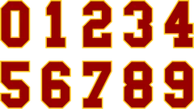
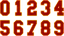

Low Minors · RP
Scott MacRae
- Team

Southern California Trojans- Organization
- Los Angeles Dodgers
- Position
- RP
- Bats/Throws
- R/R
- Height/Weight
- 6'3", 205 lb
- Born
- Aug 13, 1974 in Dearborn, MI
- Age
- 27
- Uniform
- #87
W-L0-0
ERA4.58
IP17.2
K157.6 per 9
WHIP1.58
FIP3.58
WAR0.2OOTP
2002 pitching
| Team | Lg | G | GS | W | L | SV | IP | H | R | ER | BB | K | HR | ERA | WHIP | HLD | BS | QS | CG | SHO |
|---|---|---|---|---|---|---|---|---|---|---|---|---|---|---|---|---|---|---|---|---|
| SCTr | Low Minors | 4 | 0 | 0 | 0 | 0 | 6.1 | 12 | 10 | 8 | 6 | 6 | 1 | 11.37 | 2.84 | 0 | 0 | 0 | 0 | 0 |
| HLYW | High Minors | 6 | 0 | 0 | 0 | 0 | 11.1 | 8 | 1 | 1 | 2 | 9 | 0 | 0.79 | 0.88 | 0 | 0 | 0 | 0 | 0 |
2002 pitching, advanced
| Team | Lg | BF | Pit | Pit/IP | Opp AVG | BABIP | HBP | WP | IR | IR scored | K/9 | BB/9 | HR/9 | K% | BB% | K-BB% | FIP | ERA+ | GB% | WPA | WAR |
|---|---|---|---|---|---|---|---|---|---|---|---|---|---|---|---|---|---|---|---|---|---|
| SCTr | Low Minors | 36 | 139 | 21.9 | .400 | .478 | 0 | 0 | 0 | - | 8.5 | 8.5 | 1.4 | 16.7% | 16.7% | 0.0% | 6.48 | 38 | 41.7% | -0.09 | -0.1 |
| HLYW | High Minors | 43 | 150 | 13.2 | .200 | .250 | 0 | 1 | 8 | 2 (25.0%) | 7.1 | 1.6 | 0.0 | 20.9% | 4.7% | 16.3% | 2.12 | 563 | 45.8% | 0.18 | 0.4 |
2002 batting
| Team | Lg | G | PA | AB | R | H | 2B | 3B | HR | RBI | BB | K | SB | AVG | OBP | SLG | OPS |
|---|---|---|---|---|---|---|---|---|---|---|---|---|---|---|---|---|---|
| SCTr | Low Minors | 4 | 0 | 0 | 0 | 0 | 0 | 0 | 0 | 0 | 0 | 0 | 0 | - | - | - | - |
| HLYW | High Minors | 6 | 1 | 1 | 0 | 1 | 0 | 0 | 0 | 0 | 0 | 0 | 0 | 1.000 | 1.000 | 1.000 | 2.000 |
2002 batting, advanced
Pitching splits
| Split | G | GS | W | L | SV | IP | H | R | ER | BB | K | HR | ERA | WHIP | Opp AVG | K/9 | BB/9 | HR/9 | FIP |
|---|---|---|---|---|---|---|---|---|---|---|---|---|---|---|---|---|---|---|---|
| Home | 6 | 0 | 0 | 0 | 0 | 11.2 | 12 | 5 | 5 | 4 | 9 | 0 | 3.86 | 1.37 | .267 | 6.9 | 3.1 | 0.0 | 2.67 |
| Road | 4 | 0 | 0 | 0 | 0 | 6.0 | 8 | 6 | 4 | 4 | 6 | 1 | 6.00 | 2.00 | .320 | 9.0 | 6.0 | 1.5 | 5.35 |
By month
| Month | G | GS | W | L | SV | IP | H | R | ER | BB | K | HR | ERA | WHIP | Opp AVG | K/9 | BB/9 | HR/9 | FIP |
|---|---|---|---|---|---|---|---|---|---|---|---|---|---|---|---|---|---|---|---|
| April | 7 | 0 | 0 | 0 | 0 | 13.1 | 10 | 2 | 2 | 3 | 11 | 0 | 1.35 | 0.97 | .208 | 7.4 | 2.0 | 0.0 | 2.21 |
| May | 3 | 0 | 0 | 0 | 0 | 4.1 | 10 | 9 | 7 | 5 | 4 | 1 | 14.54 | 3.46 | .455 | 8.3 | 10.4 | 2.1 | 7.80 |
vs left- and right-handed batters
| Split | BF | AB | H | HR | BB | K | Opp AVG | Opp OBP | Opp SLG | K% | BB% |
|---|---|---|---|---|---|---|---|---|---|---|---|
| vs LHB | 28 | 24 | 8 | 0 | 3 | 4 | .333 | .393 | .458 | 14.3% | 10.7% |
| vs RHB | 51 | 46 | 12 | 1 | 5 | 11 | .261 | .333 | .413 | 21.6% | 9.8% |
Opponents by situation
| Situation | PA | AB | H | 2B | 3B | HR | RBI | BB | K | AVG | OBP | SLG | OPS |
|---|---|---|---|---|---|---|---|---|---|---|---|---|---|
| Bases empty | 34 | 28 | 7 | 2 | 0 | 0 | 0 | 6 | 5 | .250 | .382 | .321 | .704 |
| Runners on | 45 | 42 | 13 | 1 | 2 | 1 | 10 | 2 | 10 | .310 | .333 | .500 | .833 |
| Runners in scoring position | 30 | 29 | 11 | 1 | 2 | 1 | 10 | 0 | 7 | .379 | .367 | .655 | 1.022 |
| RISP, two outs | 17 | 17 | 7 | 1 | 2 | 0 | 5 | 0 | 5 | .412 | .412 | .706 | 1.118 |
| Innings 4-6 | 18 | 16 | 1 | 0 | 0 | 0 | 1 | 1 | 3 | .062 | .111 | .062 | .174 |
| Innings 7-9 | 61 | 54 | 19 | 3 | 2 | 1 | 9 | 7 | 12 | .352 | .426 | .537 | .963 |
Situational splits are rebuilt from every plate appearance in the export (base/out state when the PA began). "RBI" counts runs batted in on that PA.
2002 pitching game log
| Date | Opp | Score | Dec | IP | H | R | ER | BB | K | HR | BF | PC | GB | FB | QS | WPA | |
|---|---|---|---|---|---|---|---|---|---|---|---|---|---|---|---|---|---|
| May 10 | vsBGSKY | L 2-7 | 2.0 | 3 | 1 | 1 | 0 | 2 | 0 | 8 | 25 | 2 | 1 | -0.012 | |||
| May 8 | vsBGSKY | W 6-4 | 1.0 | 2 | 3 | 3 | 2 | 1 | 0 | 7 | 25 | 1 | 1 | -0.040 | |||
| May 4 | @CAFE | L 3-10 | 1.1 | 5 | 5 | 3 | 3 | 1 | 1 | 12 | 51 | 0 | 3 | -0.072 | |||
| Apr 29 | @FRES | W 5-2 | 2.0 | 2 | 1 | 1 | 1 | 2 | 0 | 9 | 38 | 2 | 2 | 0.030 | |||
| Apr 23 | vsNWAR | L 1-3 | 1.0 | 0 | 0 | 0 | 1 | 1 | 0 | 4 | 16 | 0 | 2 | 0.028 | |||
| Apr 22 | vsNWAR | L 7-10 | 2.0 | 6 | 1 | 1 | 0 | 2 | 0 | 11 | 28 | 2 | 1 | -0.015 | |||
| Apr 16 | vsOmSC | W 6-2 | 2.0 | 0 | 0 | 0 | 0 | 0 | 0 | 6 | 21 | 3 | 3 | 0.077 | |||
| Apr 7 | @WOOD | L 1-8 | 1.2 | 0 | 0 | 0 | 0 | 1 | 0 | 5 | 25 | 2 | 2 | -0.006 | |||
| Apr 4 | vsGUAD | L 5-6 | 3.2 | 1 | 0 | 0 | 1 | 3 | 0 | 13 | 38 | 3 | 5 | 0.091 | |||
| Apr 2 | @PEAC | L 1-12 | 1.0 | 1 | 0 | 0 | 0 | 2 | 0 | 4 | 22 | 1 | 0 | 0.000 |
2002 batting game log
| Date | Opp | Score | Pos | Bat | PA | AB | R | H | 2B | 3B | HR | RBI | BB | K | SB | CS | HBP | GIDP | WPA |
|---|---|---|---|---|---|---|---|---|---|---|---|---|---|---|---|---|---|---|---|
| May 10 | vsBGSKY | L 2-7 | PH | 0 | 0 | 0 | 0 | 0 | 0 | 0 | 0 | 0 | 0 | 0 | 0 | 0 | 0 | 0.000 | |
| May 8 | vsBGSKY | W 6-4 | PH | 0 | 0 | 0 | 0 | 0 | 0 | 0 | 0 | 0 | 0 | 0 | 0 | 0 | 0 | 0.000 | |
| May 4 | @CAFE | L 3-10 | PH | 0 | 0 | 0 | 0 | 0 | 0 | 0 | 0 | 0 | 0 | 0 | 0 | 0 | 0 | 0.000 | |
| Apr 29 | @FRES | W 5-2 | PH | 0 | 0 | 0 | 0 | 0 | 0 | 0 | 0 | 0 | 0 | 0 | 0 | 0 | 0 | 0.000 | |
| Apr 23 | vsNWAR | L 1-3 | PH | 0 | 0 | 0 | 0 | 0 | 0 | 0 | 0 | 0 | 0 | 0 | 0 | 0 | 0 | 0.000 | |
| Apr 22 | vsNWAR | L 7-10 | PH | 0 | 0 | 0 | 0 | 0 | 0 | 0 | 0 | 0 | 0 | 0 | 0 | 0 | 0 | 0.000 | |
| Apr 16 | vsOmSC | W 6-2 | PH | 0 | 0 | 0 | 0 | 0 | 0 | 0 | 0 | 0 | 0 | 0 | 0 | 0 | 0 | 0.000 | |
| Apr 7 | @WOOD | L 1-8 | PH | 0 | 0 | 0 | 0 | 0 | 0 | 0 | 0 | 0 | 0 | 0 | 0 | 0 | 0 | 0.000 | |
| Apr 4 | vsGUAD | L 5-6 | PH | 9 | 1 | 1 | 0 | 1 | 0 | 0 | 0 | 0 | 0 | 0 | 0 | 0 | 0 | 0 | 0.023 |
| Apr 2 | @PEAC | L 1-12 | PH | 0 | 0 | 0 | 0 | 0 | 0 | 0 | 0 | 0 | 0 | 0 | 0 | 0 | 0 | 0.000 |
2002 fielding by position
| Team | Lg | Pos | G | GS | Inn | TC | PO | A | E | DP | FPct | ZR | Arm | Framing | SB | CS | CS% | PB |
|---|---|---|---|---|---|---|---|---|---|---|---|---|---|---|---|---|---|---|
| HLYW | High Minors | P | 6 | 0 | 11.1 | 2 | 0 | 2 | 0 | 0 | 1.000 | -0.2 | - | - | - | - | - | - |
| SCTr | Low Minors | P | 4 | 0 | 6.1 | 0 | 0 | 0 | 0 | 0 | - | -0.3 | - | - | - | - | - | - |
ZR (zone rating), Arm and Framing are OOTP's runs-above-average figures. SB/CS/CS% are base stealers against him as a catcher.
Career pitching
| Year | Team | Lvl | G | GS | W | L | SV | IP | H | R | ER | BB | K | HR | ERA | WHIP | WAR |
|---|---|---|---|---|---|---|---|---|---|---|---|---|---|---|---|---|---|
| 1995 | T | Rookie | 18 | 0 | 0 | 1 | 1 | 27.0 | 32 | 24 | 17 | 20 | 9 | 0 | 5.67 | 1.93 | -0.1 |
| 1996 | ALBQ | A | 29 | 20 | 8 | 7 | 0 | 123.0 | 118 | 61 | 46 | 53 | 82 | 3 | 3.37 | 1.39 | 2.7 |
| 1997 | T | A | 27 | 26 | 11 | 4 | 0 | 160.0 | 159 | 76 | 68 | 57 | 89 | 9 | 3.83 | 1.35 | 2.0 |
| 1998 | ClWa | AA | 49 | 5 | 9 | 4 | 0 | 113.0 | 105 | 70 | 56 | 56 | 67 | 5 | 4.46 | 1.42 | 0.6 |
| 1999 | ClWa | AA | 39 | 17 | 8 | 7 | 0 | 128.0 | 139 | 76 | 63 | 49 | 81 | 18 | 4.43 | 1.47 | -0.2 |
| 2000 | ClWa | AA | 55 | 0 | 4 | 1 | 1 | 77.0 | 75 | 32 | 31 | 40 | 61 | 4 | 3.62 | 1.49 | 0.6 |
| 2001 | CIN | Majors | 24 | 0 | 0 | 1 | 0 | 31.1 | 33 | 15 | 14 | 8 | 18 | 0 | 4.02 | 1.31 | 0.6 |
| 2001 | - | AAA | 11 | 0 | 2 | 2 | 2 | 22.0 | 14 | 5 | 3 | 6 | 15 | 1 | 1.23 | 0.91 | 0.3 |
| 2001 | ClWa | AA | 19 | 8 | 5 | 2 | 0 | 58.0 | 60 | 29 | 24 | 14 | 42 | 4 | 3.72 | 1.28 | 1.1 |
| 2002 | HLYW | High Minors | 6 | 0 | 0 | 0 | 0 | 11.1 | 8 | 1 | 1 | 2 | 9 | 0 | 0.79 | 0.88 | 0.4 |
| 2002 | SCTr | Low Minors | 4 | 0 | 0 | 0 | 0 | 6.1 | 12 | 10 | 8 | 6 | 6 | 1 | 11.37 | 2.84 | -0.1 |
| Top level | 24 | 0 | 0 | 1 | 0 | 31.1 | 33 | 15 | 14 | 8 | 18 | 0 | 4.02 | 1.31 | 0.6 |
Career batting (as a pitcher)
| Year | Team | Lvl | G | PA | AB | R | H | 2B | 3B | HR | RBI | BB | K | SB | AVG | OBP | SLG | OPS | WAR |
|---|---|---|---|---|---|---|---|---|---|---|---|---|---|---|---|---|---|---|---|
| 1998 | ClWa | AA | 49 | 14 | 11 | 2 | 3 | 1 | 0 | 0 | 0 | 3 | 6 | 0 | .273 | .429 | .364 | .792 | 0.1 |
| 1999 | ClWa | AA | 39 | 19 | 14 | 0 | 3 | 1 | 0 | 0 | 1 | 2 | 4 | 0 | .214 | .312 | .286 | .598 | -0.0 |
| 2000 | ClWa | AA | 55 | 3 | 1 | 0 | 0 | 0 | 0 | 0 | 0 | 0 | 1 | 0 | .000 | .000 | .000 | .000 | -0.1 |
| 2001 | CIN | Majors | 24 | 3 | 3 | 0 | 0 | 0 | 0 | 0 | 0 | 0 | 1 | 0 | .000 | .000 | .000 | .000 | -0.1 |
| 2001 | ClWa | AA | 19 | 13 | 13 | 0 | 3 | 0 | 0 | 0 | 2 | 0 | 5 | 0 | .231 | .231 | .231 | .462 | -0.1 |
| 2002 | HLYW | High Minors | 6 | 1 | 1 | 0 | 1 | 0 | 0 | 0 | 0 | 0 | 0 | 0 | 1.000 | 1.000 | 1.000 | 2.000 | 0.0 |
| 2002 | SCTr | Low Minors | 4 | 0 | 0 | 0 | 0 | 0 | 0 | 0 | 0 | 0 | 0 | 0 | - | - | - | - | 0.0 |
| Top level | 24 | 3 | 3 | 0 | 0 | 0 | 0 | 0 | 0 | 0 | 1 | 0 | .000 | .000 | .000 | .000 | -0.1 |
Seasons before 2002 are the player's real-life record, listed under the franchise that holds that history in this universe. "Top level" totals count major-league-level seasons only.